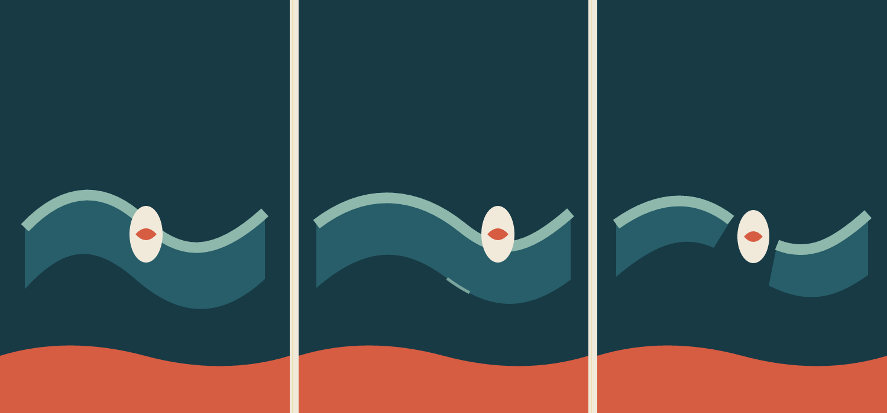

Vyt Aitken · 15 October 2026
What the Cut
Carries

Three states. The pale opening travels; the current does not return to its first shape.
A blue current holds a small pale opening with a red seed inside it. The opening travels downstream; at the last state the current breaks into two pieces, still arranged around the opening. The terracotta ground gives the motion weight.
The sequence leaves the field unpictured: no shore, no vessel, no claim about whose water this is. The red seed can be a held thing or simply color caught inside the cut.